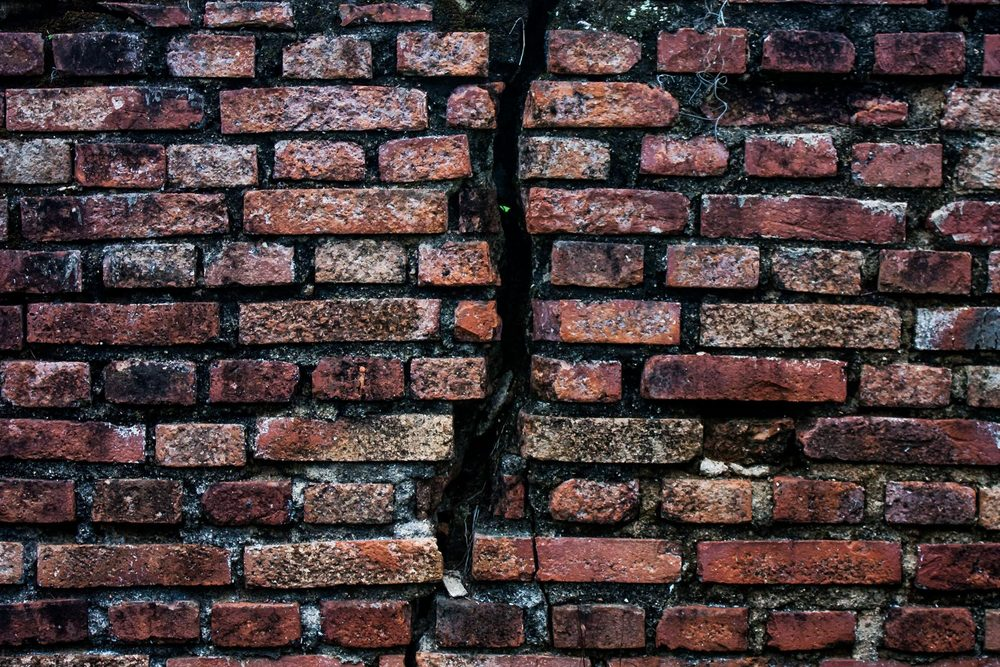
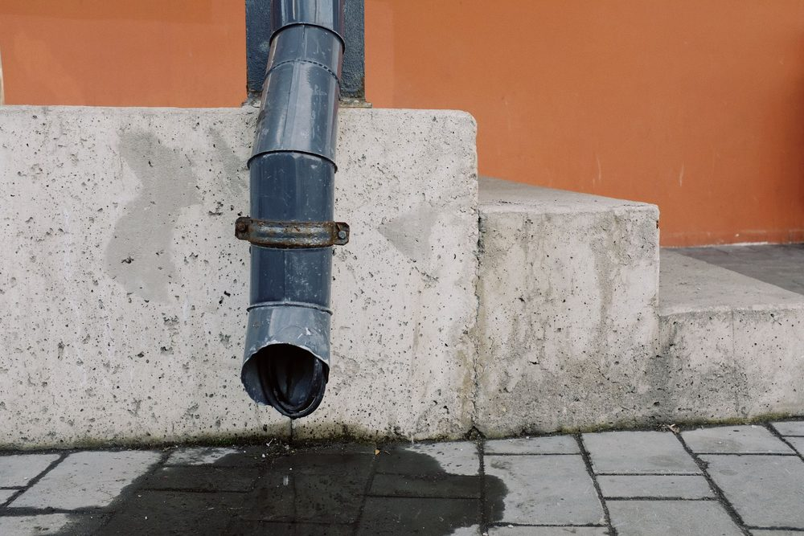

Le retrait-gonflement des argiles : un phénomène simple à comprendre
Certains sols argileux ont une particularité : leur volume varie selon leur teneur en eau. En période sèche, l'argile perd son eau et se contracte, c'est le retrait. En période humide, elle en absorbe à nouveau et augmente de volume, c'est le gonflement. Cette alternance, répétée d'une saison à l'autre, fait bouger le sol sous les fondations d'une construction, parfois de plusieurs centimètres entre l'été et l'hiver.
Le problème n'est pas le mouvement en lui-même, mais son caractère hétérogène. Un bâtiment ne repose jamais sur un sol parfaitement uniforme : une partie de ses fondations peut se trouver sur une poche d'argile plus sensible, une autre à proximité d'un arbre qui assèche localement le terrain. Ces mouvements différentiels, et non le retrait-gonflement uniforme, sont ce qui fissure réellement les bâtiments.
Ce phénomène touche en priorité les maisons individuelles, construites sur des fondations superficielles peu profondes et peu rigides, contrairement aux bâtiments plus lourds dont les fondations, souvent plus profondes, atteignent des couches de sol moins sensibles aux variations climatiques de surface.
La carte d'exposition : savoir si votre terrain est concerné
Le Bureau de recherches géologiques et minières (BRGM) a cartographié l'exposition au retrait-gonflement des argiles sur l'ensemble du territoire métropolitain. Cette carte, consultable gratuitement sur le site Géorisques, classe chaque parcelle selon trois niveaux : exposition faible, moyenne ou forte. Elle repose sur la nature géologique des formations argileuses identifiées en profondeur, indépendamment de tout projet de construction précis.
Cette carte donne une première orientation utile avant tout projet, mais elle reste une donnée générale à l'échelle géologique. Elle ne remplace jamais une étude de sol réalisée directement sur votre parcelle, qui seule permet de connaître la nature exacte du terrain à l'endroit précis de votre construction.
MH Structure n'est pas géotechnicien et ne réalise pas l'étude de sol. La reconnaissance du terrain, avec sondages et essais, relève du métier de géotechnicien. Nous vous invitons à consulter notre article sur le rapport géotechnique (étude de sol) pour comprendre les missions à commander. Notre rôle démarre à réception de ce rapport, pour dimensionner les fondations et les dispositions constructives adaptées au niveau de retrait-gonflement de votre terrain.
Les fissures typiques en escalier
Le retrait-gonflement des argiles produit une signature de fissuration relativement reconnaissable, même si elle ne suffit jamais, à elle seule, à établir un diagnostic certain. La fissure la plus caractéristique suit un tracé en escalier, en épousant les joints de maçonnerie entre les briques, blocs ou parpaings, plutôt qu'en traversant les éléments eux-mêmes en ligne droite.
Ces fissures apparaissent le plus souvent aux angles des façades, au-dessus et en dessous des ouvertures (portes, fenêtres), et suivent une aggravation saisonnière : elles s'ouvrent davantage en période de sécheresse prolongée, puis peuvent se refermer partiellement en période humide, sans jamais disparaître complètement au fil des cycles successifs.
D'autres signes accompagnent souvent ces fissures : un décollement entre la maison et une extension ou un garage attenant, des portes et fenêtres qui se coincent progressivement, ou un dallage de terrasse qui se désolidarise de la construction principale. Pour approfondir la lecture de ces désordres, notre article sur les fissures dans un bâtiment détaille les différents types de fissures et leur degré de gravité.

Les dispositions constructives pour limiter les effets du phénomène
Face à un terrain argileux, plusieurs dispositions constructives permettent de limiter fortement le risque de désordre, sans pour autant supprimer entièrement le phénomène. Elles portent principalement sur trois axes : l'ancrage des fondations, la rigidité de la structure, et la continuité des chaînages.
- Un ancrage suffisamment profond : les fondations doivent descendre au-delà de la zone superficielle où les variations d'humidité, et donc de volume du sol, sont les plus marquées. Plus l'ancrage est profond, moins le bâtiment subit les mouvements saisonniers du sol.
- Une structure rigide : chaînages horizontaux continus en tête de murs et au niveau des planchers, chaînages verticaux aux angles et aux intersections de murs, pour que la construction se comporte comme un ensemble solidaire plutôt que comme des éléments indépendants qui bougent chacun de leur côté.
- Des joints de rupture entre des bâtiments ou des parties de bâtiment de rigidités différentes (maison et garage, corps de bâtiment et extension), pour éviter qu'un mouvement différentiel entre les deux parties ne se transforme en fissure.
- Un dallage désolidarisé des fondations, plutôt que rigidement lié à la structure porteuse, pour absorber sans dommage les mouvements résiduels du sol sous la dalle.
Ces dispositions ne sont pas de simples recommandations de bon sens : elles sont précisées par l'arrêté du 22 juillet 2020 relatif aux techniques et modalités de mise en œuvre des règles de construction parasismique dans les zones exposées au phénomène de retrait-gonflement des argiles, applicable aux permis de construire déposés en zone d'exposition moyenne ou forte.
| Niveau d'exposition (carte Géorisques) | Profondeur d'ancrage minimale des fondations* | Étude de sol obligatoire à la vente d'un terrain (loi ELAN) |
|---|---|---|
| Faible | Selon le DTU 13.1, sans exigence renforcée liée à l'argile | Non |
| Moyenne | 0,80 m minimum | Oui |
| Forte | 1,20 m minimum | Oui |
* Arrêté du 22 juillet 2020, sauf étude géotechnique démontrant qu'une profondeur différente est suffisante sur la parcelle concernée.
La gestion des eaux et de la végétation autour de la construction
Une partie importante du risque de retrait-gonflement se joue en dehors de la structure elle-même, dans la gestion des eaux et de la végétation aux abords immédiats du bâtiment. Ces facteurs accentuent localement l'assèchement ou l'humidification du sol, et amplifient donc les mouvements différentiels responsables des fissures.
- Les eaux pluviales doivent être collectées et évacuées loin des fondations, sans infiltration localisée près des murs, qui créerait une zone plus humide que le reste du terrain.
- Les arbres de grande taille, plantés trop près de la construction, assèchent le sol sur un rayon souvent supérieur à leur hauteur, par l'action de leurs racines. Une distance de plantation adaptée à l'essence choisie limite ce risque.
- Les canalisations enterrées, en cas de fuite non détectée, peuvent au contraire créer une humidification localisée du sol qui provoque un gonflement différentiel du terrain.
- Le dévers du terrain autour de la maison doit être maintenu, pour éloigner naturellement les eaux de ruissellement des fondations plutôt que de les concentrer contre le bâtiment.
Un arbre planté trop près d'une maison existante peut suffire à provoquer des fissures, plusieurs années après la construction, sans qu'aucune malfaçon initiale ne soit en cause. Le retrait-gonflement des argiles peut donc apparaître longtemps après la fin du chantier, en fonction de l'évolution de l'environnement immédiat du bâtiment.

Le lien avec la loi ELAN
La loi ELAN (loi n° 2018-1021 du 23 novembre 2018) a introduit une obligation d'information spécifique au risque argile : depuis son entrée en vigueur, une étude géotechnique doit être fournie par le vendeur lors de la vente d'un terrain non bâti constructible situé en zone d'exposition moyenne ou forte au retrait-gonflement des argiles. Cette obligation vise à informer l'acquéreur avant la signature, pour qu'il intègre ce paramètre dans son projet de construction.
Il est essentiel de bien comprendre la portée de cette étude fournie à la vente : elle correspond à une mission de type G1, centrée sur l'identification du risque à l'échelle de la parcelle. Elle ne dimensionne rien et ne remplace pas la mission G2, nécessaire pour obtenir les données de dimensionnement propres à votre projet et à son implantation exacte. Notre article sur le rapport géotechnique détaille l'ensemble des missions géotechniques normalisées, de G1 à G5.
Ce que fait MH Structure face au risque argile
MH Structure n'établit pas l'étude de sol ni la cartographie du risque argile, mais intervient pleinement une fois le rapport géotechnique transmis :
- Analyse du rapport géotechnique transmis par votre géotechnicien, en particulier le niveau de retrait-gonflement identifié sur votre parcelle.
- Dimensionnement des fondations adapté à ce niveau d'exposition : profondeur d'ancrage, type de fondation, dispositions constructives associées.
- Conception des chaînages et des joints de rupture nécessaires pour rigidifier la structure et limiter les effets d'un mouvement différentiel du sol.
- Diagnostic structurel, si des fissures sont déjà apparues sur une construction existante, pour identifier leur origine et proposer les mesures adaptées.
Votre terrain est situé en zone d'exposition moyenne ou forte au retrait-gonflement des argiles ? Transmettez-nous votre rapport géotechnique, ou parlons de votre projet pour orienter la mission à commander : nous prenons ensuite en charge le dimensionnement des fondations et des dispositions constructives adaptées. Devis gratuit sous 48h.
Questions fréquentes
Comment savoir si mon terrain est exposé au retrait-gonflement des argiles ?
La carte officielle d'exposition au retrait-gonflement des argiles, consultable sur le site Géorisques, permet de connaître le niveau de risque (faible, moyen ou fort) à l'échelle de votre parcelle. Cette carte donne une première indication, mais seule une étude géotechnique réalisée sur le terrain confirme la nature réelle du sol et permet de dimensionner les fondations.
Toutes les fissures en escalier sont-elles dues au retrait-gonflement des argiles ?
Non. Une fissure en escalier peut aussi résulter d'un tassement différentiel lié à une hétérogénéité du sol, à des fondations sous-dimensionnées ou à un désordre ponctuel comme une fuite d'eau enterrée. Le retrait-gonflement des argiles est une cause fréquente, surtout après un épisode de sécheresse, mais un diagnostic structurel reste nécessaire pour confirmer l'origine exacte de la fissure.
La loi ELAN m'oblige-t-elle à construire différemment ?
La loi ELAN impose surtout la fourniture d'une étude de sol par le vendeur lors de la vente d'un terrain non bâti en zone d'exposition moyenne ou forte. Les dispositions constructives renforcées (profondeur d'ancrage, chaînages, joints de rupture) découlent quant à elles de l'arrêté du 22 juillet 2020, applicable aux permis de construire déposés en zone concernée depuis son entrée en vigueur.
MH Structure réalise-t-il l'étude de sol nécessaire en zone argileuse ?
Non. MH Structure n'est pas géotechnicien et ne réalise pas l'étude de sol : cette mission relève d'un bureau d'études géotechniques. Nous exploitons le rapport géotechnique une fois transmis pour dimensionner les fondations et les chaînages adaptés au niveau de retrait-gonflement de votre terrain.